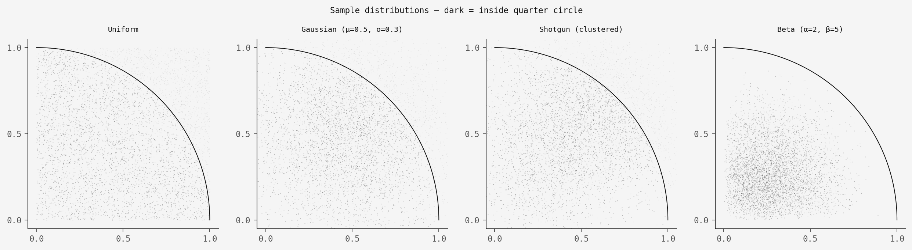
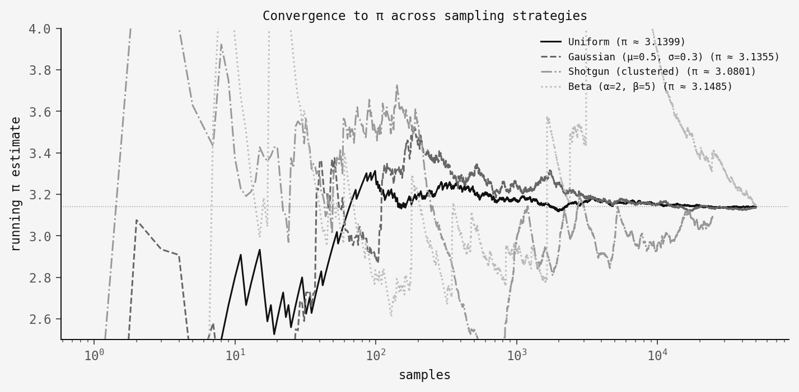
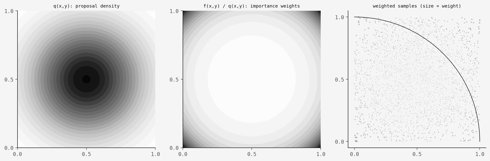

The scenario
It's 2077. Civilisation has collapsed. The undead roam the earth. You've barricaded yourself in an abandoned university library with a shotgun, a roll of aluminium foil, and a vague memory of your undergraduate statistics course. You need to calculate π — maybe you're building a water wheel, maybe you're just trying to stay sane — but the power grid is down and all you have is your trusty Mossberg 500. How do you do it?
This is, roughly speaking, the premise of a great 2014 paper by Dumoulin & Thouin, who actually fired a Mossberg 500 at aluminium foil and used the pellet holes to estimate π via Monte Carlo methods. They got within 0.33% of the true value.
But what I find genuinely interesting about the paper isn't (just) the shotgun gimmick — it's the technique they used to make it work: importance sampling. Because a shotgun doesn't produce uniform samples. And the standard "throw darts at a square" Monte Carlo method for π assumes uniform samples. So how do you solve that?
The answer is worth understanding even if you never plan to discharge a firearm in the dark.
The classic approach (uniform sampling)
The textbook version goes like this. Take the unit square [0,1]² and inscribe a quarter circle of radius 1. The area of the quarter circle is π/4, and the area of the square is 1. So if you throw N points uniformly at random into the square and count how many land inside the quarter circle, you get:
π ≈ 4 × (hits / N)
It's simple and it works. But it requires that your points are uniformly distributed. If they're following any other distribution (like, say, the one produced by a shotgun), this naïve counting will give you the wrong answer.
Importance sampling: use any distribution
The Monte Carlo estimate of π is really just an expected value:
π/4 = Ef[g(x)] = ∫ f(x) g(x) dx
where f(x) is the uniform density on [0,1]² and g(x) = 1 if x is inside the quarter circle and 0 otherwise. The key insight of importance sampling is that you can rewrite this as:
π/4 = Eq[ g(x) · f(x) / q(x) ]
for any distribution q(x) with support covering the unit square. The ratio f(x)/q(x) acts as a correction weight: samples from dense regions of q get weighted less, and samples from sparse regions get weighted more. And this works for any q — Gaussian, Beta, a literal shotgun spread — as long as you know, or can estimate, the density.
Let's see it work
I wrote a simulation (code.py) that estimates π using four different sampling distributions:
Uniform — the textbook approach. No importance
weights needed.
Gaussian (μ=0.5, σ=0.3) — samples pile up in the
centre. Importance sampling corrects for this.
Shotgun (clustered) — simulated shotgun blasts with
random cluster centres and Gaussian spread per shot. Density
estimated with a 2D histogram, exactly like the original paper.
Beta (α=2, β=5) — heavily skewed toward the
top-left corner. Most of the probability mass is nowhere near the
quarter circle boundary.
Here's what 50,000 samples look like for each:

The distributions look completely different, but importance sampling gives the same answer. Here's the convergence:

All four converge to π! The uniform sampler is the smoothest by far (no correction is needed). The Gaussian and Beta samplers converge nicely but with slightly higher variance due to the importance weights. The shotgun is the noisiest. This is because we're estimating q(x) from the data itself, which adds uncertainty on top of uncertainty.
How the weights work, visually
Here's what importance sampling does to the Gaussian case. The left panel shows the proposal density q(x,y) — lots of mass in the centre. The middle panel shows the importance weights f(x)/q(x) — samples near the edges get boosted. The right panel shows the weighted samples, where marker size is proportional to weight:

The corner samples are rare but heavy. The centre samples are abundant but light. After weighting, the effective distribution is uniform — which is what we need for the π estimate to work.
The code
The importance sampling estimator itself is very simple:
def estimate_pi_importance(x, y, q_x, q_y):
"""
f(x,y) = 1 on [0,1]² (target density)
q(x,y) = q_x * q_y (proposal density)
g(x,y) = 1 if x²+y² ≤ 1 (quarter circle indicator)
π ≈ 4 × (1/N) Σ g(xᵢ,yᵢ) / q(xᵢ,yᵢ)
"""
mask = (x >= 0) & (x <= 1) & (y >= 0) & (y <= 1)
g = (x[mask]**2 + y[mask]**2 <= 1.0).astype(float)
weights = 1.0 / (q_x[mask] * q_y[mask])
full = np.zeros_like(x)
full[mask] = g * weights
return 4.0 * full.mean()That's it. You give it samples from any distribution along with the density values at those points, and it returns π. The full simulation script with all four samplers, figures, and convergence analysis is available as code.py.
Takeaway
The shotgun framing is fun, but what matters here is the generality of importance sampling. We rarely get to sample from the distribution we actually want — importance sampling says that's fine, as long as you can characterise the bias, you can correct for it.
The shotgun sampler is the hardest case here because we don't even know q(x) analytically — we have to estimate it from the same data we're using for the π calculation (using a held-out split and histogram density estimation, as in the original paper). But it still works! The estimate is noisy, but it converges.
So next time civilisation collapses: grab a shotgun, some foil, and the importance sampling formula. You'll have π within the hour.